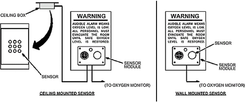

Fixed sites: Sensor is located in a wall-mounted sensor module inside the magnet room.
Transportables/Relocatables (helium only): Sensor is located in a ceiling-mounted box inside the magnet room.
Transportables/Relocatables (helium and nitrogen): Two oxygen monitors are used: one for helium and one for nitrogen. The only difference between the two monitors is their sensor location. One sensor is located in a wall-mounted sensor module, while the other sensor is located in a ceiling-mounted box.
Illustration 25: Oxygen Monitor Sensor Locations
